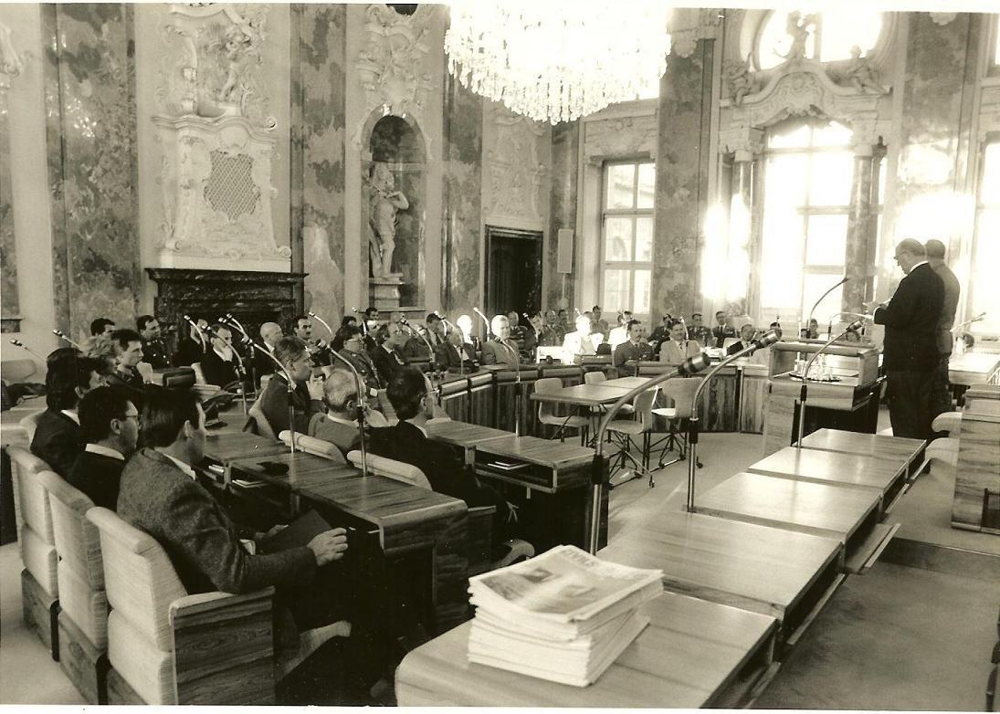

Международная поиско-спасательная консультативная группа была создана в 1991 году. Это стало следствием реализации инициатив представленных специализированными (ИНСАРАГ) была создана в 1991 международными поисково-спасательными отрядами (ПСО) работавшими вместе по иквидациипоследствий землетрясений в Мексике в 1985 году и в Армении в 1988 году. С тем, чтобы не дублировать существующие структуры группа была сформирована в рамках имеющихся координационных гуманитарных механизмов под эгидой Организации Объединенных Наций (ООН). Поэтому Секретариат группы организационно входит в состав отдела поддержки полевой координации (FCSS) управления чрезвычайных служб (ESB) Управления ООН по координации гуманитарных вопросов (УКГВ ООН)
Под эгидой ООН ИНСАРАГ в 2002 году добилась успешного принятия Резолюции Генеральной Ассамблеи ООН “Повышение эффективности и укрепление координации международной помощи при проведении поисково-спасательных операций в городах”. Считается, что во многом именно эта резолюция лежит в основе тех успехов, которые группа смогла добиться за последние 20 лет.
Основной целью ИНСАРАГ является оказание содействия в вопросах координации действий между различными ПСО, которые реагируют на международном уровне на чрезвычайные ситуации связанные с обрушением зданий и сооружений, в основном, в результате землетрясений. Такого рода координации группа достигает путем обеспечения взаимодействия реагирующих подразделений еще до наступления чрезвычайных ситуаций. Различного рода рабочие встречи специалистов являются основой для множества практических договоренностей между ними, упрощают процесс взаимодействия при реагировании на реальные бедствия и катастрофы. Множество информации о том, как международные ПСО договорились работать может быть найдено в Руководстве ИНСАРАГ, которое является «живым» документом, определяющим принципы, следовать которым договорено внутри группы.
Книга «20 лет ИНСАРАГ» (английский язык, испанский язык)
20 Years of INSARAG Anniversary Video